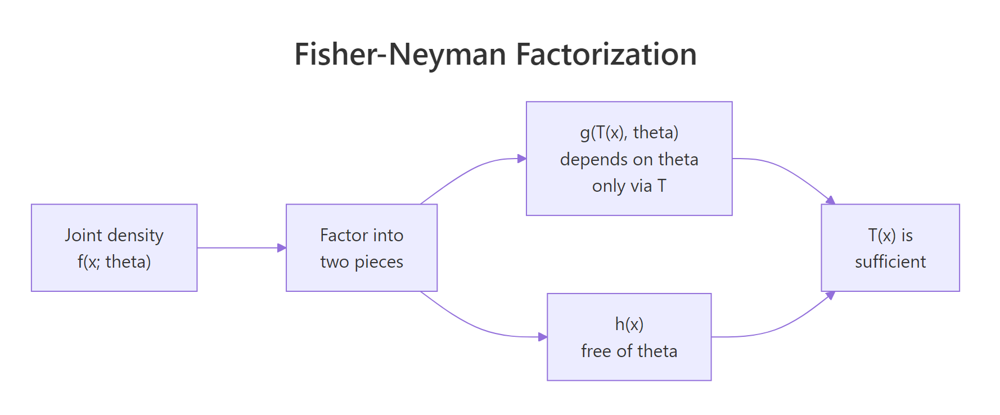
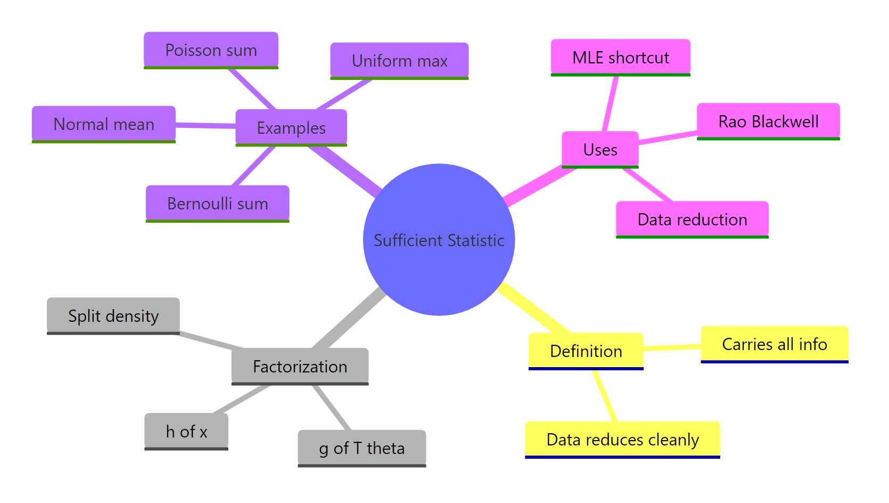

Sufficiency in Statistics in R: Sufficient Statistics, Fisher-Neyman Factorization
A sufficient statistic is a single number (or a small set of numbers) computed from your sample that carries every drop of information the data has about an unknown parameter. Once you know the sufficient statistic, the rest of the raw data tells you nothing extra, so estimation, likelihood, and inference can all be done from that compact summary.
What is a sufficient statistic, in plain language?
Picture flipping a coin 100 times and recording every heads and tails. To estimate the coin's bias, do you really need all 100 answers? No, just the count of heads. That count is a sufficient statistic: a summary that captures every bit of evidence the sample carries about the parameter. Below, we check this claim numerically. The likelihood built from only sum(x) should match the likelihood built from the full sample, up to a constant that has nothing to do with the parameter.
The two log-likelihood curves are identical at every p. The sum of heads is doing all the work, the individual flips are irrelevant once you know their total. That is exactly what sufficiency means: the full sample and the summary T = sum(x) give the same inferential verdict about p.
Three short formulas make this precise. A statistic $T(X)$ is sufficient for $\theta$ if the conditional distribution of the data given $T$ does not depend on $\theta$:
$$P(X = x \mid T(X) = t, \theta) = P(X = x \mid T(X) = t)$$
Where:
- $X = (X_1, \ldots, X_n)$ is the sample
- $T(X)$ is any function of the sample (the statistic)
- $\theta$ is the unknown parameter
Intuitively, once $T$ is known, the data cannot whisper any further hint about $\theta$.
Try it: Simulate 60 Bernoulli(0.4) flips. Build the log-likelihood from the count of successes alone (i.e., only use the sum), evaluate it at p = 0.4, and compare to the full-sample log-likelihood at the same p. They should match exactly.
Click to reveal solution
Explanation: The Bernoulli log-likelihood is T*log(p) + (n - T)*log(1 - p), where T = sum(x). Nothing else about ex_x influences the answer.
What does the Fisher-Neyman factorization theorem say?
Checking sufficiency from the definition means computing conditional distributions, which is a headache. The Fisher-Neyman factorization theorem gives a shortcut: factor the joint density. If it splits into a piece that touches $\theta$ only through $T(x)$ times a piece that is free of $\theta$, then $T$ is sufficient. No integration, no conditioning.

Figure 1: How the Fisher-Neyman factorization splits the joint density into a theta-part through T(x) and an x-only part.
Formally, $T(X)$ is sufficient for $\theta$ if and only if the joint density factors as:
$$f(x_1, \ldots, x_n ; \theta) = g\bigl(T(x), \theta\bigr) \cdot h(x)$$
Where:
- $f$ is the joint density (or mass function) of the sample
- $g$ depends on the sample only through $T(x)$ and may involve $\theta$
- $h$ is any function of the data that does not involve $\theta$
Try the theorem on Bernoulli. The joint mass function of $n$ flips with success probability $p$ is:
$$f(x; p) = \prod_{i=1}^{n} p^{x_i}(1-p)^{1-x_i} = p^{\sum x_i}(1-p)^{n - \sum x_i}$$
This is already in factorized form. Set $T(x) = \sum x_i$, take $g(T, p) = p^{T}(1-p)^{n-T}$, and $h(x) = 1$. The theorem fires: sum(x) is sufficient for $p$. Let's verify the factorization numerically.
Both routes give the same number. The direct product over all 100 flips and the compact g(T, p) evaluation agree perfectly, which is exactly what the theorem promises.
p varies. The form $p^T (1-p)^{n-T}$ is the answer.Try it: The Poisson pmf is $f(x_i; \lambda) = e^{-\lambda}\lambda^{x_i}/x_i!$. Write the joint pmf for a sample of size $n$, group the $\lambda$-dependent pieces, and identify $T(x)$. Then verify your factorization in R against the direct product of dpois.
Click to reveal solution
Explanation: The joint pmf is $e^{-n\lambda}\lambda^{\sum x_i}/\prod x_i!$. The $\lambda$-piece depends on data only through $T = \sum x_i$. The $1/\prod x_i!$ piece is $h(x)$. So sum(ex_pois) is sufficient for $\lambda$.
How do we find the sufficient statistic for common distributions?
Once you trust the factorization theorem, finding sufficient statistics for textbook distributions is fast. Here are the canonical cases you will see again and again.
| Distribution | Sufficient statistic $T(X)$ | Why |
|---|---|---|
| Bernoulli$(p)$ | $\sum X_i$ | Joint mass $=p^{T}(1-p)^{n-T}$ |
| Poisson$(\lambda)$ | $\sum X_i$ | Joint pmf $\propto e^{-n\lambda}\lambda^{T}$ |
| Exponential(rate) | $\sum X_i$ | Joint density $\propto \text{rate}^n e^{-\text{rate}\cdot T}$ |
| Normal$(\mu, \sigma^2)$, $\sigma$ known | $\sum X_i$ (or $\bar X$) | Joint density factors through sum of $x_i$ |
| Normal$(\mu, \sigma^2)$, both unknown | $(\sum X_i, \sum X_i^2)$ | Two parameters, two summaries |
| Uniform$(0, \theta)$ | $\max X_i$ | Joint density $=\theta^{-n} \cdot \mathbb{1}\{\max x \le \theta\}$ |
Two numeric checks make the pattern concrete. First the Poisson, using the same "log-likelihoods must coincide" test we used for Bernoulli.
The difference is constant across every value of lambda. A constant shift cannot change the shape of the likelihood, the MLE, or the curvature, so sum(x_pois) carries the whole inference.
Next, the uniform on $(0, \theta)$. Its likelihood is unusual because it is a step function: flat for all $\theta$ above the sample maximum, zero for any $\theta$ below it. The maximum of the sample is therefore the only number you need.
The plot is zero for theta < max(x_unif) and drops off as theta^(-n) above it. Knowing the maximum alone tells you exactly where the likelihood lives, so max(x) is sufficient. You can discard all the other 39 observations and lose nothing.
exp(eta(theta) * T(x) - A(theta)) * h(x) and T(x) in the exponent is your sufficient statistic. Bernoulli, Poisson, Exponential, Normal, Gamma, Beta, all exponential family, all follow this rule.Try it: For Exponential(rate), the density is $f(x; r) = r e^{-r x}$ for $x > 0$. Factor the joint density, identify the sufficient statistic, and verify in R that the log-likelihood depends on the data only through that statistic.
Click to reveal solution
Explanation: The joint density is $r^n \exp(-r \sum x_i)$. The rate interacts with the data only through $T = \sum x_i$, so the sum is sufficient.
What is a minimal sufficient statistic and why does it matter?
Any one-to-one function of a sufficient statistic is also sufficient, so sum(x), n * mean(x), and 2 * sum(x) + 5 are all sufficient for the Bernoulli $p$. The question becomes: what is the smallest such summary? The minimal sufficient statistic is the sufficient statistic that can be written as a function of every other sufficient statistic, so it compresses the data as much as possible without losing information.
The Lehmann-Scheffé criterion says $T$ is minimal sufficient if the ratio $f(x; \theta)/f(y; \theta)$ is free of $\theta$ exactly when $T(x) = T(y)$. In practice, for exponential families the canonical sufficient statistic is already minimal, and that is almost every distribution you will meet.
Demonstration with a Normal sample when $\sigma^2$ is known. Both $(\sum x, \sum x^2)$ and $\bar x$ are sufficient, but $\bar x$ uses one number instead of two. The log-likelihoods based on each must agree up to a constant.
Both log-likelihoods have the same shape as mu varies, they only differ by an additive constant that does not depend on mu. So mean(x_norm) alone is enough, and compressing to (sum, sumsq) throws nothing useful away either, but it wastes a number.
Try it: Confirm that n * mean(x) and sum(x) carry the same information for a Normal sample with known variance. Build two log-likelihoods, one from each statistic, and show they have the same shape over a $\mu$-grid.
Click to reveal solution
Explanation: n * mean(x) is sum(x) by definition, so the log-likelihoods are literally identical. A one-to-one function of a sufficient statistic is itself sufficient.
How does sufficiency connect to maximum likelihood and data reduction?
Here is where sufficiency earns its keep. The maximum likelihood estimator depends on the data only through the sufficient statistic, so you can compute it without touching the raw observations at all. Storage, bandwidth, and privacy pressures all bow to this fact: transmit one number and someone downstream can fit the same model.
For Bernoulli, the MLE is $\hat p = \sum x_i / n = T / n$. Watch: we run an MLE using only the total successes and the sample size, never touching x_bern.
Exactly the same estimate. Whoever handed you the dataset could have kept every individual flip secret and told you only the head count, and you would have arrived at the same answer.
Try it: A colleague tells you they observed 180 events across 60 days in a Poisson process, but refuses to share the day-by-day counts. Can you still fit the MLE for $\lambda$? Compute it.
Click to reveal solution
Explanation: For Poisson, $T = \sum x_i$ is sufficient for $\lambda$, and $\hat\lambda_{\text{MLE}} = T/n$. You need nothing else.
Practice Exercises
Exercise 1: Verify sample mean sufficiency for a Normal
Simulate 60 Normal(μ = 7, σ² = 4) draws. Using a grid of μ from 3 to 11, build one log-likelihood from the full sample and another from only the sample mean. Show that the two curves differ by at most a constant that does not depend on μ, which confirms the sample mean is sufficient.
Click to reveal solution
Explanation: range() returns two equal values, so the gap is the same at every μ. That constant absorbs the $\sum x_i^2$ and $\log$-normalizer pieces, none of which depend on μ. The mean alone drives inference.
Exercise 2: Uniform(0, θ) and the maximum
Simulate 50 Uniform(0, 4) draws. For a θ-grid from 1 to 6, compute the likelihood directly. Then find the MLE and show that it equals the sample maximum.
Click to reveal solution
Explanation: The likelihood is zero when θ is smaller than any observed value and decreases as theta^(-n) above the maximum. So the peak sits exactly at max(x), which is the MLE and also the sufficient statistic.
Complete Example
A worked end-to-end Poisson inference that relies only on the sufficient statistic. Simulate a sample, compute T, fit the MLE from T alone, plot the log-likelihood, and cross-check against the full-data MLE.
Exactly equal. If you were building a privacy-preserving pipeline that transmits only T_total and n_total from an edge device to a server, the server fits the same MLE, draws the same log-likelihood, computes the same confidence interval. Sufficiency is the theoretical license for that engineering decision.
Summary

Figure 2: Sufficiency at a glance, definition, theorem, canonical examples, and uses.
Key takeaways:
- A sufficient statistic summarises a sample without losing any information about the parameter.
- The Fisher-Neyman factorization theorem is the practical test: a density that factors as $g(T(x), \theta) \cdot h(x)$ tells you $T$ is sufficient, no conditioning required.
- For exponential families, the canonical statistic in the exponent is sufficient and minimal.
- The MLE depends on data only through the sufficient statistic, which is why data reduction is lossless for estimation.
- Sufficiency is the starting point for sharper results like the Rao-Blackwell theorem, Lehmann-Scheffé theorem, and the Cramér-Rao lower bound.
References
- Wikipedia, Sufficient statistic. Link
- Penn State STAT 415, Lesson 24.2, Factorization Theorem. Link
- Casella, G. and Berger, R. L., Statistical Inference, 2nd Edition, Duxbury, 2002, Chapter 6.
- Watkins, J., Sufficient Statistics lecture notes, University of Arizona. Link
- Breheny, P., Factorization theorem, University of Iowa STAT 7110. Link
- García-Portugués, E., A First Course on Statistical Inference, Chapter 3.5, Minimal sufficient statistics. Link
- R Core Team, Distributions reference manual. Link
Continue Learning
- Point Estimation in R: What Makes an Estimator Good? Bias, Variance, and MSE: the broader framework in which sufficiency plays its role.
- Maximum Likelihood Estimation in R: MLE depends on data only through sufficient statistics, so sufficiency is the workhorse behind every likelihood fit.
- Method of Moments in R: Fit Distributions Without Calculus: an alternative estimator that also uses sample-based summaries.